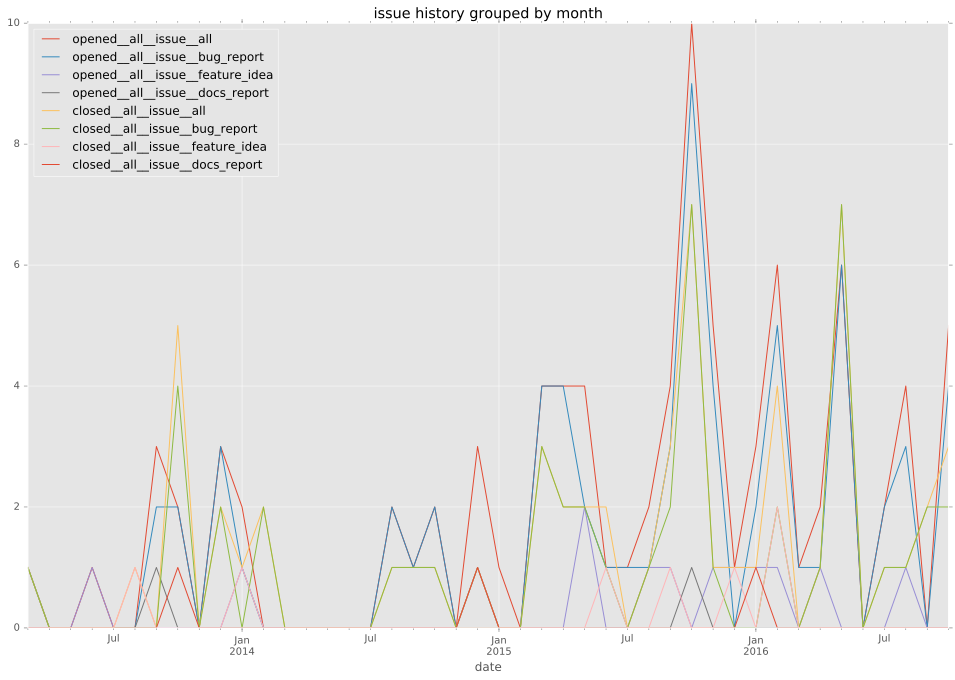
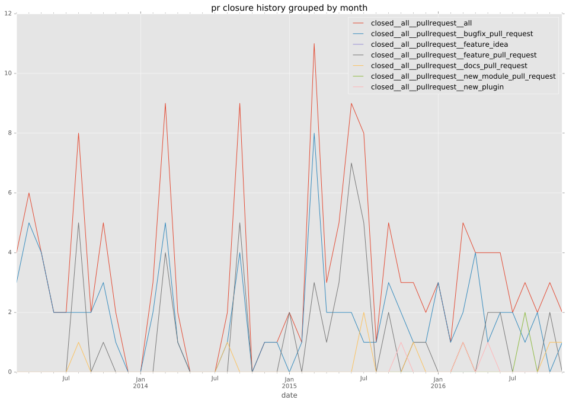

authors
- lwade
maintainers
- ansible
contributors
- lwade : 90 commits
- billwanjohi : 31 commits
- wtcross : 22 commits
- abadger : 19 commits
- proby : 13 commits
- bcoca : 13 commits
- Hypermanzer : 13 commits
- acaire : 12 commits
- jmunhoz : 11 commits
- defionscode : 9 commits
- semifocused : 8 commits
- mpdehaan : 8 commits
- magnusart : 8 commits
- tedder : 7 commits
- peterkh : 7 commits
- jctanner : 6 commits
- rosmo : 5 commits
- steenzout : 4 commits
- ralph-tice : 4 commits
- jimi-c : 4 commits
- jcowley : 3 commits
- bpennypacker : 3 commits
- yosida95 : 2 commits
- scottanderson42 : 2 commits
- rowleyaj : 2 commits
- mlaccetti : 2 commits
- keithhassen : 2 commits
- feanil : 2 commits
- qrtt1 : 1 commits
- mragh : 1 commits
- mbarrin : 1 commits
- lorin : 1 commits
- fvant : 1 commits
- ferrants : 1 commits
- dougluce : 1 commits
- ciupicri : 1 commits
- bennojoy : 1 commits
total issue counts
unknown: 3
feature pull request: 47
docs report: 5
pullrequest: 145
docs pull request: 7
bugfix pull request: 78
feature idea: 12
issue: 86
new plugin: 6
bug report: 73
issue history

pullrequest history

days open by issue type
bugfix pull request
count: 111
std: 28.6098927353
min: 0
max: 138
median: 1.0
mean: 12.6306306306
all
count: 260
std: 80.3165007211
min: 0
max: 543
median: 3.5
mean: 40.1423076923
pullrequest
count: 0
std: nan
min: nan
max: nan
median: nan
mean: nan
docs pull request
count: 12
std: 125.315480676
min: 0
max: 433
median: 2.0
mean: 54.1666666667
docs report
count: 3
std: 47.2687352627
min: 0
max: 86
median: 9.0
mean: 31.6666666667
feature pull request
count: 62
std: 99.1164150022
min: 0
max: 450
median: 67.5
mean: 93.3387096774
feature idea
count: 5
std: 15.3297097168
min: 1
max: 39
median: 12.0
mean: 16.0
issue
count: 0
std: nan
min: nan
max: nan
median: nan
mean: nan
new plugin
count: 6
std: 47.4959647409
min: 15
max: 128
median: 47.5
mean: 63.6666666667
bug report
count: 57
std: 96.0679616633
min: 0
max: 543
median: 1.0
mean: 35.649122807
closures grouped by total days open